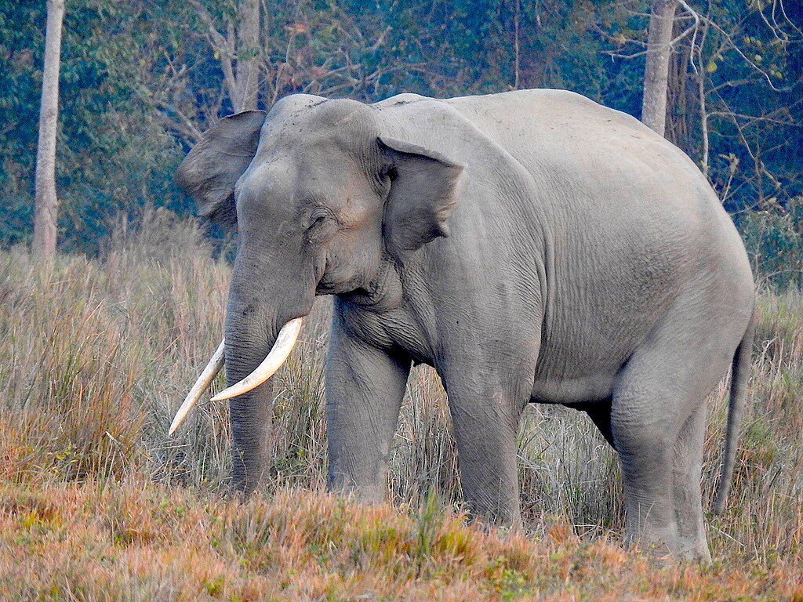

Elephantidae is a family of large, herbivorous proboscidean mammals collectively
called elephants and mammoths.
These are large terrestrial mammals with a snout modified into a trunk and teeth modified into tusks. Most
genera and species in the family are extinct. Only two genera, Loxodonta (African
elephants) and Elephas (Asian elephants) , are living.
The family was first described by John Edward Gray in 1821,[5] and later assigned to
taxonomic ranks within the
order Proboscidea. Elephantidae has been revised by various authors to include or
exclude other extinct
proboscidean genera.

| Most famous elephants | |||
|---|---|---|---|
| Number | Name | Ref. | Color |
| 1 | Dumbo | Disney | Grey |
| 2 | Manny | Ice age | Brown |
| 3 | Surus | Gannibal | Grey |
| 4 | Rosie | Wasser für die Elefanten | |
| 5 | Moudak | Stravinsky | |